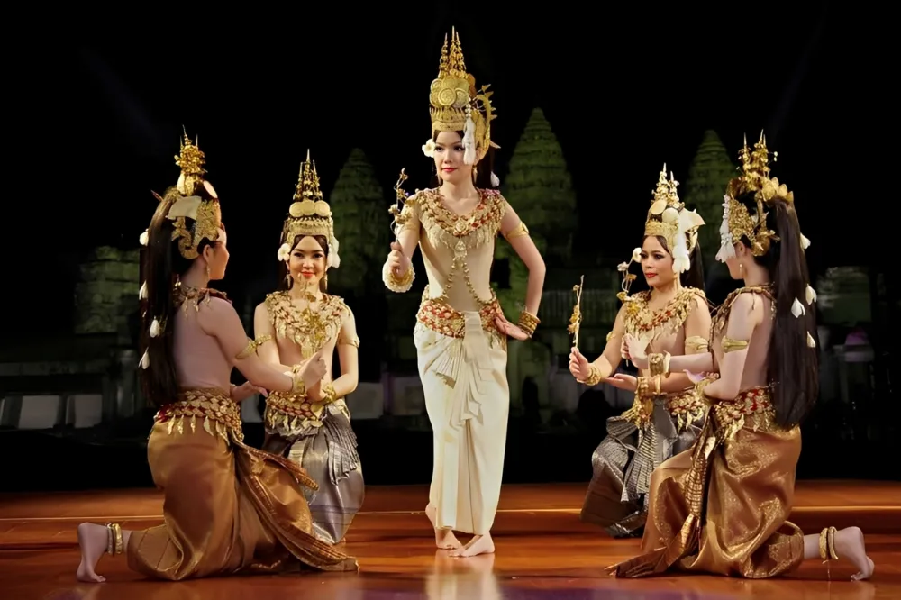

Classical Dance
របាំអប្សរា
របាំអប្សរា គឺជារបាំបុរាណខ្មែរដ៏ល្បីល្បាញមួយ ដែលតំណាងឱ្យសោភ័ណភាព ភាពទន់ភ្លន់ និងអរិយធម៌ដ៏រុងរឿងនៃចក្រភពខ្មែរ។ របាំនេះត្រូវបានបំផុសគំនិតពីរូបអប្សរាដែលឆ្លាក់នៅលើជញ្ជាំងប្រាសាទបុរាណ ជាពិសេស ប្រាសាទអង្គរវត្ត